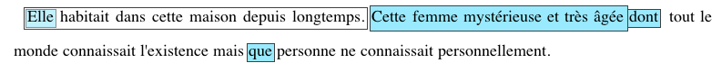

La constitution du corpus RésolCo répond à la volonté de mettre à disposition un corpus d'écrits scolaires et permettre d'effectuer des analyses sur différents aspects, comme l'orthographe ou les structures discursives. Pour ce faire il est nécessaire de digitaliser le copies manuscrites des élèves.
Précédemment appelé "corpus Charolles", en hommage aux travaux de Michel Charolles sur les procédés anaphoriques utilisés par des élèves de fin d’école primaire et de début de collège dans des textes narratifs rédigés à partir d’images (Charolles, 1988), le corpus était constitué d'une trentaine des textes manuscrits, non numérisés.
La numérisation de ces 30 textes et des nouvelles copies récoltées a été effectuée en suivant différentes étapes, qui vont de la transcription et encodage au format .xml jusqu'à l'analyse syntaxique automatique (parsing), en passant par une phrase de normalisation orthographique, comme illustré dans la chaîne de traitement ci-dessous.
La chaîne de traitement consiste en 7 étapes principales :
Afin de transformer les copies en une ressource exploitable par la communauté scientifique, et y appliquer des méthodes de linguistique de corpus et de TAL, il est nécessaire de passer par une étape de transcription des scans de copies.
Le format choisi pour la transcription est le format XML, selon la norme TEI-P5.
Toute transcription est assortie de métadonnées fournissant des informations sur la collecte et la numérisation de la copie, sur les conditions d'écriture et sur l'école qui a participé à la récolte des copies.
Les transcriptions sont anonymisées.
Pour ce qui concerne le corps du texte, l'objectif de la transcription est de reproduire le plus fidèlement possible le texte de l'élève ou de l'étudiant. Afin d'obtenir une reproduction fidèle, la mise en page ligne par ligne est resneignée ainsi que toute trace du processus d'écriture comme les ratures, les ajouts, les soulignements, etc. Aucune erreur d'orthographe n'est corrigée lors de la transcription.
Toute transcription est vérifiée par une personne différente de celle qui a transcrit le texte.
Pour plus de détails sur les éléments transcrits et les balises utilisées vous pouvez consulter :
Afin de faciliter l'analyse des erreurs orthographiques et pour pouvoir appliquer des méthodes de linguistique de corpus et de TAL, une étape de normalisation des transcriptions de copies a été prévue.
Cette phase consiste dans l'étiquetage des erreurs d'orthographe. Pour annoter ces erreurs on a choisi d'utiliser l'interface d'annotation Glozz (Widlöcher A. and Mathet Y., 2009).
Pour ce qui concerne l'annotation des erreurs d'orthographe, il a été décidé de ne pas classer les erreurs, en effet, la catégorisation des erreurs orthographiques sera effectuée par les experts du projet E-Calm qui travaillent sur cet aspect-là.
La normalisation du corpus RésolCo est effectuée par des annotateurs francophones.
En cas d'incertitude, les annotateurs peuvent indiquer une incertitude dans la détection, dans la correction de l'erreur ou bien une incertitude sur les deux.
Si plusieurs solutions de correction sont possibles, elles sont indiquées.
Toute normalisation est vérifiée par une personne différente de celle qui a annoté le texte.
Pour plus de détails sur les éléments normalisés et les décisions prises vous pouvez consulter :
L'étude de la cohérence discursive dans les écrits d'élèves et d'étudiants fait partie des tâches principales au coeur du projet E-calm. Afin d'obtenir un aperçu de la maîtrise et de l'évolution de cette compétence parmi les rédacteurs, nous nous sommes concentrés sur des éléments de cohésion directement liés à la cohérence globale du récit et qui nous serviront d'indicateurs pertinents : les continuités référentielles (ou CR).
Pour rappel : l'exercice d'écriture demandé dans les récits Resolco impose trois phrases à introduire dans l'ordre au cours d'un récit. Chaque phrase consigne contient un référent humain : "Elle habitait dans cette maison depuis longtemps" ; "il se retourna en entendant ce grand bruit" ; "Depuis cette aventure, les enfants ne sortent plus la nuit".
Afin d'analyser ces éléments de cohésion discursive, une annotation de chaque "maillon" (ou référence) des chaînes de continuité référentielle correspondant aux trois référents humains de la consigne a été effectuée pour les copies normalisées grâce à l'interface d'annotation Glozz (Widlöcher A. and Mathet Y., 2009).
Par exemple, tous les éléments référant au personnage ELLE sont annotés tel que :
On obtient la CR_ELLE : Elle - Cette femme mystérieuse et très âgée - dont - que.
Chaque copie a été annoté par un ou plusieurs annotateurs francophones et un "gold standard" (ou adjudication) a été décidé pour gérer des cas d'incertitude ou d'ambiguïté au sein de l'annotation.
Pour plus de détails concernant l'annotation des chaînes de continuité référentielle vous pouvez consulter le guide d'annotation ainsi que le Wiki pour des exemples de cas d'incertitudes gérés lors de l'adjudication.
L'alignement de ces fichiers annotés avec les fichiers parsés sous talismane nous permet de récupérer les informations morpho-syntaxiques pour effectuer une analyse plus fine des chaines de continuité référentielle.
Site développé par S. Federzoni et L.M. Ho-Dac (contact).